Kokoro Reader
使用入門手冊
朗讀文字、將影片語音轉成字幕、英文 ↔ 繁體中文翻譯，並為影片配上新的語音。
所有處理都在您自己的 Windows 筆電上完成：不需網路、不上傳檔案、不需帳號。
版本 1.1 · ETINSTW · English edition: “Kokoro Reader – Getting Started”
0目錄
- 1 · 安裝
- 2 · 啟動與結束
- 3 · 朗讀文字檔
- 4 · 影片配音：總覽
- 5 · 步驟 1 轉錄
- 6 · 步驟 2 翻譯
- 7 · 步驟 3 校對
- 8 · 詞彙表
- 9 · 步驟 4 配音
- 10 · 步驟 5 匯出
- 11 · 已有字幕的影片
- 12 · 所需時間
- 13 · 檔案存放位置
- 14 · 疑難排解
- 15 · 一頁檢查表
可以做什麼
| 您有 | Kokoro Reader 提供 | 請看 |
|---|
| 文字檔（.txt / .md） | 朗讀並逐字標示，可存成 WAV 或 MP3 | 第 3 節 |
| 英文或中文影片 | 字幕、可逐句校對的翻譯，以及配上另一種語言新語音的影片 | 第 4–10 節 |
| 字幕檔（.srt）與其影片 | 同上，但從您的字幕開始 | 第 11 節 |
隱私：語音辨識、翻譯和語音都內建在程式中。您的影片與文字不會離開您的筆電。
1安裝
需求：Windows 10 或 11（64 位元）、約 5 GB 可用磁碟空間，建議 16 GB 記憶體
（文字與短片 8 GB 即可）。不需系統管理員權限，也不需網路。
- 將
KokoroReader-Setup-1.1.1.exe（約 2.8 GB）複製到筆電，按兩下執行。
- 若 Windows 顯示「Windows 已保護您的電腦」，請按 其他資訊 → 仍要執行。
安裝程式沒有公司憑證簽章；請只對 ETINSTW 提供的安裝程式這樣做。
- 選擇安裝程式語言（English 或 繁體中文），閱讀歡迎頁面後按 下一步。
- 可勾選 建立桌面捷徑，再按 安裝。安裝約需 5–6 分鐘。
- 保留勾選 立即啟動 Kokoro Reader，按 完成。
單一安裝程式已包含所有元件：程式本身、Python、英文與中文語音、語音辨識模型、翻譯模型，以及處理影片的 FFmpeg。之後不會再下載任何東西。
開始功能表會出現三個項目：Kokoro Reader、Kokoro Reader – 使用入門（本手冊）與 Kokoro Reader – Getting Started（英文版手冊）。
2啟動與結束
- 從開始功能表開啟 Kokoro Reader。它會在您的網頁瀏覽器中以
127.0.0.1 開啟，
也就是您自己的筆電，而不是網站。
- 右上角的 EN / 繁中 可切換畫面語言。
- 使用說明 會在程式內開啟本手冊的精簡版。
- 使用完畢請按 結束。若只關閉瀏覽器分頁，程式約 5 分鐘後會自動結束，但工作進行中絕不會結束。
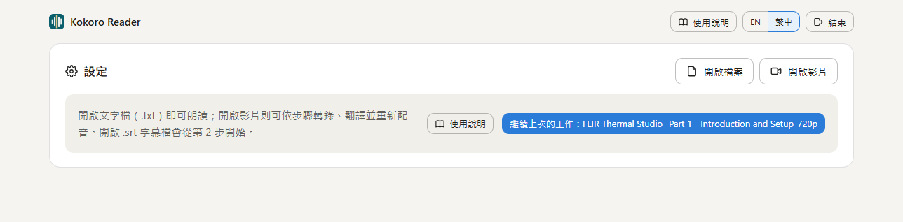
開始畫面。「繼續上次的工作：…」可回到上次處理的影片。
工作會隨時自動儲存。關閉程式後再開啟，按 繼續上次的工作：<影片名稱> 即可從中斷處繼續。
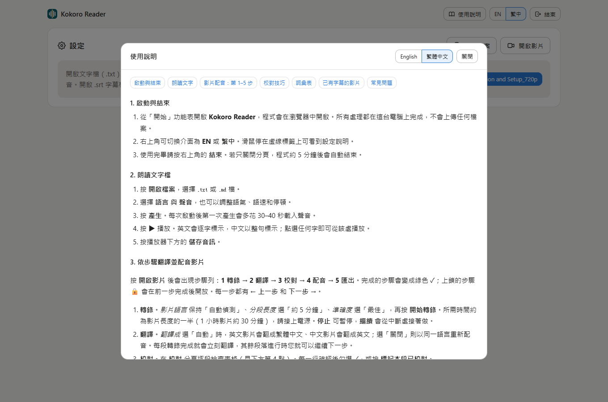
程式內的「使用入門」：以英文或繁體中文簡要說明相同步驟。
3朗讀文字檔
- 按 開啟檔案，選擇
.txt 或 .md 檔案。
- 選擇語言與語音。預設：英文
af_bella、中文 zm_009。
也可設定語氣、速度與句間停頓。將滑鼠移到有虛線底線的標籤上可看到說明。
- 按 產生。程式啟動後第一次產生會多花 30–40 秒載入語音。
- 按 ▶ 播放，點任何字可跳到該處。在播放器下方的檔案清單中儲存 WAV 或 MP3。
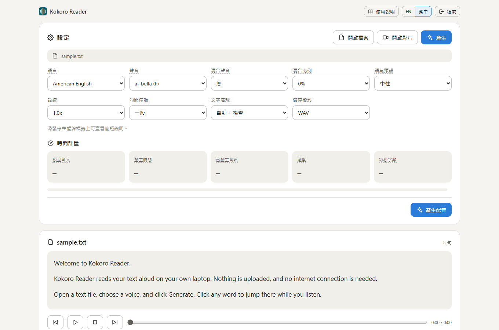
文字模式：上方是設定，下方是文字，朗讀時會同步標示。
4影片配音：總覽
按 開啟影片 並選擇影片（MP4、MOV、MKV 等大部分格式皆可）。畫面會出現五個步驟的列，由左至右引導您：
1轉錄
語音 → 字幕
2翻譯
英 ↔ 中
3校對
檢查與修正
4配音
新語音音軌
5匯出
儲存檔案
- 目前的步驟是藍色；完成的步驟變成綠色 ✓。
鎖定的步驟 🔒 會在前一步準備好時自動開啟。
- 每個步驟都有藍色的說明列告訴您該做什麼，底部有 上一步 / 下一步 按鈕。
- 長影片會在自然停頓處切成約 5 分鐘的段落。後面段落還在轉錄時，您就可以先校對第 1 段。
- 下方卡片有兩個分頁：校對（逐句表格）與 播放與標示（觀看結果）。
處理期間請接上電源並保持筆電不休眠。長影片需要一段時間（見第 12 節）。
停止 與 繼續 會從中斷處接續，即使關閉程式後也可以。
5步驟 1 · 轉錄
將影片中的語音轉成有時間碼的字幕句子。
| 設定 | 建議 | 原因 |
|---|
| 影片語言 | 自動偵測 | 會自行判斷英文或中文。只有自動判斷錯誤時才自己選擇。 |
| 分段長度 | 約 5 分鐘 | 可以提早開始校對。10 分鐘以下的短片選「整部影片」也可以。 |
| 準確度 | 最佳 | 「快速」約快一倍，但錯誤較多；適合粗略草稿。 |
- 確認設定後按 開始轉錄。
- 觀察進度列。第一段完成後步驟 2 就會開啟，不必等全部完成。
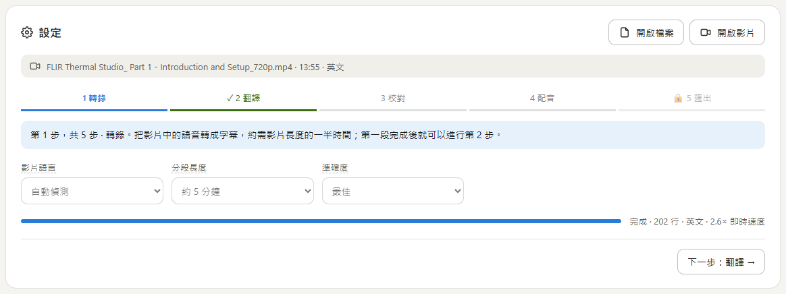
步驟 1 完成：14 分鐘影片轉出 202 句，速度為實際時間的 2.6 倍。
6步驟 2 · 翻譯
每段轉錄完成後會立即翻譯。
- 翻譯成 = 自動：英文影片翻成繁體中文（台灣用語），中文影片翻成英文。
- 若只想用原語言重新配音（例如替換錄音品質不佳的旁白），請選關閉 — 同一語言。
- 重新翻譯 會重做翻譯，例如在加入許多詞彙後。您手動修改過的句子會保留。
翻譯以整句為單位，再分配回各字幕行，因此即使一句話被拆成好幾行，意思仍然完整。
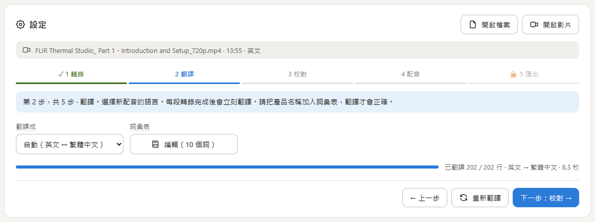
步驟 2：選擇翻譯方向；進度顯示已翻譯的段落數。
7步驟 3 · 校對
在這裡把翻譯修正好。機器翻譯偏向直譯，請預期需要修改部分句子。
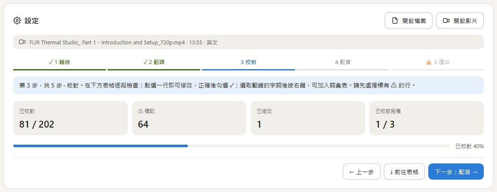
步驟 3：計數顯示已校對、已標示與已修改的數量。
校對表格
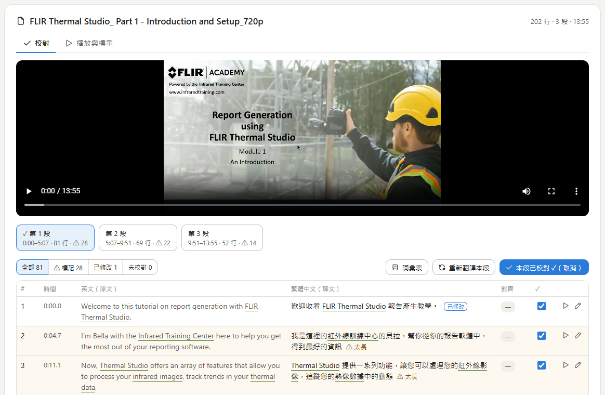
校對分頁：影片、段落按鈕、篩選，以及原文與譯文並排。
- 用段落按鈕選擇段落（例如第 1 段 · 0:00–5:07）。
- 按 ⚠ 標記，先看最可能需要修改的句子。
- 點一下譯文即可編輯。Enter 儲存，Esc 取消。
編輯時也可以按 重新翻譯 或 復原修改（回到機器翻譯）。
- ▶ 播放影片中的該句，讓您聽到實際說了什麼。✎ 可修改原文。
- 每句正確就勾選 ✓；整段完成後按 標記本段已校對。
- 對每一段重複以上步驟。未校對 會顯示剩下的句子。
⚠ 標示的意思
這些是提示，不是錯誤。
| 標示 | 意思 | 處理方式 |
|---|
| ⤓ 合併 | 句子延續到下一行。 | 點一下即可把兩行合成一行。 |
| 太長 | 譯文可能太長，無法在可用時間內說完。 | 縮短用字。 |
| 不確定 | 轉錄時對某些字沒有把握。 | 按 ▶ 聆聽，修正原文（✎）。 |
| 延遲 | 步驟 4 之後：新語音超過了下一句的開始時間。 | 縮短該句，再產生一次語音。 |
8詞彙表：教一次就記住
產品名稱與專業術語常被翻錯。在詞彙表修正一次，之後每部影片都會使用您的用詞。詞彙表中的詞在表格中以綠色底線標示。
- 在表格中用滑鼠選取翻錯的字詞。
- 按右鍵 → 開啟加入詞彙表，已自動填入該字詞。
- 在另一邊輸入正確用詞。中文欄留空表示保留英文（例如 FLIR Thermal Studio）。
- 按 加入並修正這一行，或 加入並重新翻譯全部 套用到所有句子。
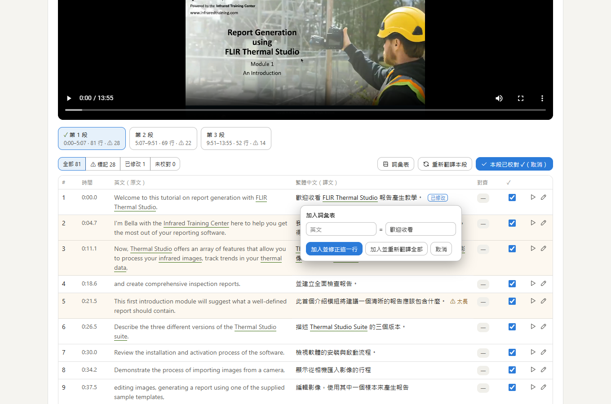
選取字詞後按右鍵，即可加入詞彙表。
詞彙表 按鈕會列出所有詞彙、來源與使用次數，可搜尋、修改與刪除。
匯出 .txt 與 匯入 .txt 可讓同事共用同一份清單。
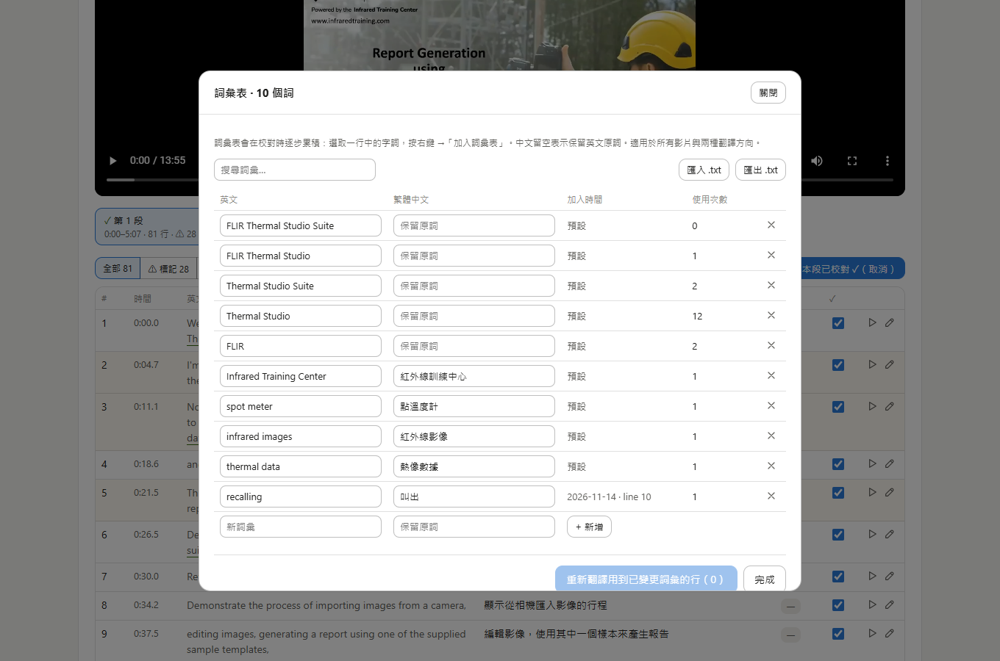
詞彙表視窗。
9步驟 4 · 配音
產生新的語音音軌並放進影片中。
- 確認語音：預設中文
zm_009（男聲）、英文 af_bella（女聲）；清單中還有其他語音。
- 保留配音內容 = 譯文、對齊時間 = 加速 + 使用空檔、最高加速 = 1.25×。
- 原始音訊 = 取代 — 只有新配音（預設）。影片原本的聲音會移除，只留下新語音，
因此絕不會同時聽到兩個聲音。背景音樂也會一併移除。
- 按 產生配音。時間表顯示進度；符合時間的行數顯示有多少句能在時間內說完。
- 開啟 播放與標示 分頁觀看結果。
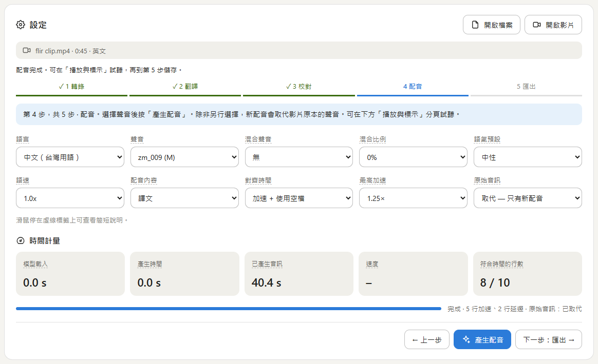
步驟 4 完成：10 句中有 8 句吻合；2 句延遲的句子會在校對表格中標示。
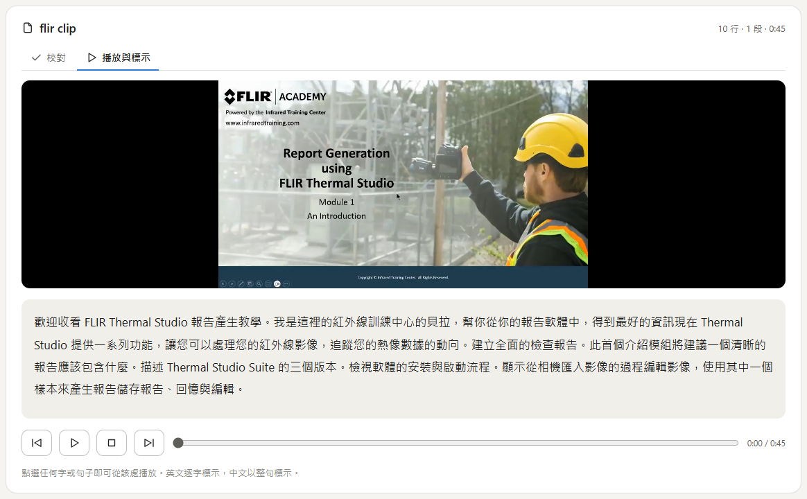
播放與標示：配上新語音的影片，文字隨語音同步標示。
若有句子延遲，請回到步驟 3，篩選 ⚠ 標記，縮短標示為延遲的句子，再產生一次語音。
把最高加速調到 1.4× 是較快的辦法，但聽起來會比較趕。
10步驟 5 · 匯出
勾選需要的檔案後按 儲存已勾選，或按單一列的 儲存。檔案以影片名稱命名，存到您的「下載」資料夾。
| 檔案 | 名稱範例 | 用途 |
|---|
| 配上新語音的影片（MP4） | video.zh-TW.mp4 | 完成的配音影片 |
| 只有語音（WAV） | video.zh-TW.wav | 在其他影片軟體中編輯 |
| 新字幕，配合新語音重新計時 | video.zh-TW.srt | 配音影片的字幕 |
| 原文字幕 | video.en.srt | 原始影片的字幕 |
| 雙語字幕 | video.en+zh-TW.srt | 每行兩種語言，供檢查或教學使用 |
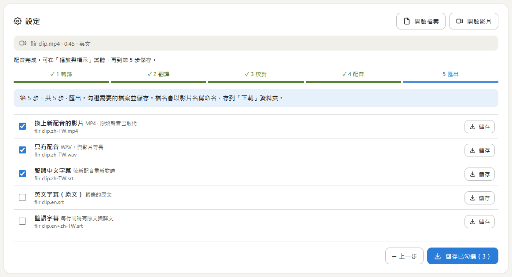
步驟 5：最常用的三個檔案已預先勾選。
11已有字幕的影片
若影片已有品質良好的 .srt，可略過轉錄：
- 按 開啟檔案 選擇
.srt，程式會從步驟 2 開始。
- 按 開啟影片 選擇對應的影片（步驟 3–5 需要）。
- 照常進行步驟 2 到 5。
12所需時間
在 ETINSTW 筆電上實測（Intel Core Ultra 7，不需獨立顯示卡）：
| 工作 | 14 分鐘影片 | 1 小時影片（估計） |
|---|
| 步驟 1 轉錄（最佳） | 約 6 分鐘 | 約 25–30 分鐘 |
| 步驟 2 翻譯 | 10 秒內 | 1 分鐘內 |
| 步驟 4 中文配音 | 約 11 分鐘 | 約 1 小時 |
| 步驟 4 英文配音 | 約 8 分鐘 | 約 40 分鐘 |
程式啟動後第一次產生配音，會多花 30–80 秒載入語音模型。校對時間因人而異：第一次每 5 分鐘段落約需 10–20 分鐘，詞彙表累積後會越來越快。
長影片小技巧：先開始轉錄，每段準備好就開始校對。配音可以排在下班前或午餐時間進行。
13檔案存放位置
| 內容 | 位置 |
|---|
| 在步驟 5 或文字模式儲存的檔案 | 您的「下載」資料夾 |
| 進行中的工作、詞彙表、記錄檔 | %LOCALAPPDATA%\KokoroReader |
| 程式與本手冊 | %LOCALAPPDATA%\Programs\Kokoro Reader |
解除安裝（Windows 設定 → 應用程式 → Kokoro Reader → 解除安裝）會移除程式以及工作資料夾，
包括您的詞彙表。若要保留，請先按 詞彙表 → 匯出 .txt。直接安裝新版本覆蓋舊版會保留您的工作與詞彙表。
14疑難排解
| 問題 | 處理方式 |
|---|
| Windows 封鎖安裝程式 | 其他資訊 → 仍要執行（第 1 節）。 |
| 按下開始轉錄或產生後似乎沒反應 | 第一次載入可能需要一分鐘，請留意進度文字。 |
| 頁面顯示程式已停止 | 從開始功能表再次開啟 Kokoro Reader，按 繼續上次的工作：…。 |
| 重新開啟程式後步驟 5 是空的 | 結束程式後不會保留語音。回到步驟 4 再按一次 產生配音；您的修改都會保留。 |
| 部分句子的語音延遲 | 在步驟 3 縮短這些句子，或在步驟 4 提高最高加速。 |
| 產品名稱翻錯 | 加入詞彙表一次即可（第 8 節）。 |
| 某個中文詞發音怪怪的 | 中文語音模型的已知限制。請換個說法，品牌名稱可寫成英文。 |
| 語言判斷錯誤 | 重新開啟影片，在步驟 1 自行設定影片語言。 |
| 其他問題 | 將 %LOCALAPPDATA%\KokoroReader\kokoro-reader.log 傳給提供安裝程式的人。 |
15一頁檢查表
影片配音
- 開啟影片
- 步驟 1：自動偵測 · 約 5 分鐘 · 最佳 → 開始轉錄
- 步驟 2：自動
- 步驟 3：逐段 → 先看 ⚠ 標記 → 修改 → ✓ → 標記本段已校對
- 用詞錯誤？選取 → 右鍵 → 加入詞彙表
- 步驟 4：確認語音 · 原始音訊 = 取代 → 產生配音
- 在 播放與標示 觀看；修正延遲的句子後再產生一次
- 步驟 5：勾選檔案 → 儲存已勾選
- 結束
朗讀文字
- 開啟檔案 → .txt / .md
- 語言與語音
- 產生
- ▶ 聆聽 · 點字詞可跳轉
- 儲存 WAV / MP3
- 結束
校對表格的鍵盤操作